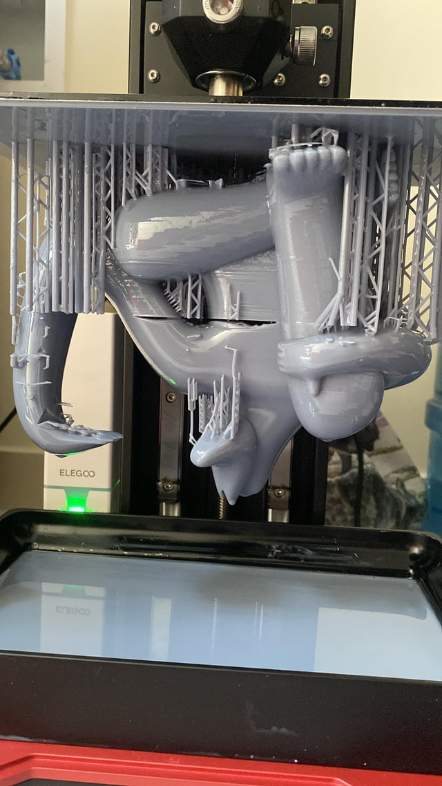
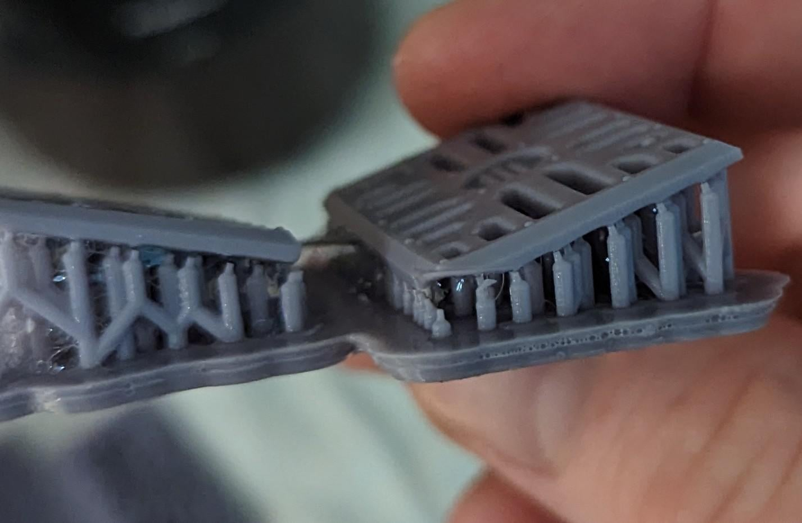
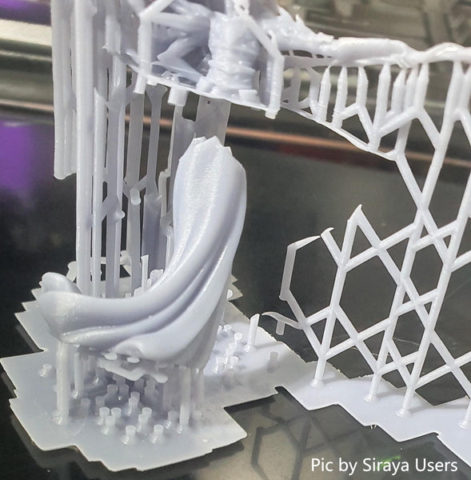

Solucione Problemas com Confiança
Este guia completo ajuda você a identificar causas e aplicar soluções eficazes para os problemas mais comuns em impressão 3D de resina. Cada problema inclui diagnóstico detalhado e passo a passo para resolução!
Peça Não Adere à Plataforma
Sintoma: A impressão não gruda na plataforma de construção e fica no tanque ou no FEP.

🔍 Causas Possíveis:
- Plataforma mal nivelada
- Tempo de exposição das camadas base insuficiente
- Plataforma suja ou com resina curada
- Temperatura ambiente muito baixa (abaixo de 20°C)
- Resina vencida ou mal armazenada
- Plataforma lisa demais (sem textura)
✅ Soluções:
- Refaça o nivelamento com papel sulfite
- Aumente tempo de exposição base para 40-60s
- Limpe plataforma com IPA e lixe levemente (lixa 400)
- Mantenha temperatura entre 25-30°C
- Verifique validade da resina
- Aumente número de camadas base para 6-8
Peça com Falhas ou Buracos
Sintoma: Impressão completa mas com partes faltando, buracos ou áreas não curadas.
🔍 Causas Possíveis:
- Tempo de exposição muito baixo
- Resina contaminada ou vencida
- LCD/tela danificada ou com pixels mortos
- Falta de suportes adequados
- Resina não filtrada (partículas bloqueando luz)
- FEP arranhado ou opaco
✅ Soluções:
- Aumente tempo de exposição em 0.5-1s
- Filtre a resina e verifique validade
- Teste o LCD com arquivo de teste
- Adicione mais suportes em áreas críticas
- Filtre resina com filtro de café ou malha fina
- Verifique e troque FEP se necessário
Resina Grudando no FEP/Filme
Sintoma: Peça não se solta do FEP e fica presa no fundo do tanque em vez de subir com a plataforma.
🔍 Causas Possíveis:
- FEP muito apertado ou frouxo
- Lift speed (velocidade de elevação) muito rápida
- Falta de lubrificação do FEP
- Tempo de exposição excessivo
- Área de contato muito grande sem suportes
- FEP desgastado ou com resina curada grudada
✅ Soluções:
- Ajuste tensão do FEP (som de tambor leve)
- Reduza lift speed para 60-80mm/min
- Aplique óleo de PTFE no FEP
- Reduza tempo de exposição em 0.5s
- Adicione suportes e incline a peça 30-45°
- Limpe ou troque o FEP
Peça Super-Curada (Muito Dura/Quebradiça)
Sintoma: Impressão muito rígida, quebradiça, com perda de detalhes finos e cor amarelada.
🔍 Causas Possíveis:
- Tempo de exposição muito alto
- Potência do LED muito alta
- Pós-cura excessiva
- Camadas muito grossas com tempo alto
- Resina exposta à luz ambiente durante impressão
✅ Soluções:
- Reduza tempo de exposição em 1-2s
- Diminua potência do LED para 70-80%
- Reduza tempo de pós-cura UV
- Use camadas mais finas (0.025-0.05mm)
- Proteja impressora de luz solar/ambiente
Peça Sub-Curada (Mole/Pegajosa)
Sintoma: Impressão mole, pegajosa ao toque, deforma facilmente e não endurece completamente.
🔍 Causas Possíveis:
- Tempo de exposição muito baixo
- LED fraco ou envelhecido
- Resina vencida ou mal armazenada
- Falta de pós-cura
- Temperatura muito baixa durante impressão
- Resina não agitada (pigmentos decantados)
✅ Soluções:
- Aumente tempo de exposição em 1-2s
- Verifique potência do LED (teste com fotômetro)
- Use resina dentro da validade
- Faça pós-cura UV por 5-10 minutos
- Aqueça ambiente para 25-30°C
- Agite resina suavemente antes de usar
Warping (Empenamento da Peça)
Sintoma: Peça deforma, entorta ou empena após impressão ou durante a cura.

🔍 Causas Possíveis:
- Tensão interna durante a cura
- Resfriamento desigual
- Suportes insuficientes
- Orientação inadequada da peça
- Paredes muito finas
- Pós-cura com temperatura muito alta
✅ Soluções:
- Adicione mais suportes nas extremidades
- Oriente peça em ângulo de 30-45°
- Use hollow (oco) com furos de drenagem
- Deixe peça esfriar lentamente após impressão
- Aumente espessura de paredes finas
- Faça pós-cura em temperatura ambiente primeiro
🎯 Prevenção de Warping
- 🔹 Nunca imprima peças planas paralelas à plataforma
- 🔹 Sempre incline pelo menos 30° para distribuir tensão
- 🔹 Use suportes mais densos em áreas grandes
- 🔹 Deixe peça em água morna após limpeza para relaxar tensões
Linhas Horizontais (Layer Lines)
Sintoma: Linhas visíveis horizontais na superfície da peça, efeito "escada".
🔍 Causas Possíveis:
- Altura de camada muito alta (0.1mm ou mais)
- Eixo Z com atrito ou mal lubrificado
- Velocidade de elevação muito rápida
- Parafusos do eixo Z soltos
- Vibração durante impressão
- Anti-aliasing desativado
✅ Soluções:
- Reduza altura de camada para 0.025-0.05mm
- Lubrif ique eixo Z adequadamente
- Reduza lift speed para 60-80mm/min
- Aperte parafusos do eixo Z
- Coloque impressora em superfície estável
- Ative anti-aliasing no fatiador
Suportes Quebrando Durante Impressão
Sintoma: Suportes se rompem durante a impressão, causando falha total.

🔍 Causas Possíveis:
- Suportes muito finos ou fracos
- Tempo de exposição muito baixo
- Lift speed muito rápida
- Peça muito pesada para os suportes
- Ângulo de suporte inadequado
- Resina com baixa resistência
✅ Soluções:
- Aumente diâmetro dos suportes (médio ou pesado)
- Aumente tempo de exposição em 0.5-1s
- Reduza lift speed para 60mm/min
- Adicione mais suportes ou use hollow
- Use suportes em ângulo de 45-60°
- Considere resina mais resistente (Tough/ABS-Like)
Bolhas ou Furos na Impressão
Sintoma: Pequenas bolhas ou furos distribuídos pela peça.
🔍 Causas Possíveis:
- Resina agitada com muita força (ar incorporado)
- Tempo de repouso (rest time) insuficiente
- Resina muito fria (bolhas não sobem)
- Lift speed muito rápida (cria vácuo)
- Falta de furos de drenagem em peças ocas
✅ Soluções:
- Agite resina suavemente, sem criar bolhas
- Aumente rest time para 3-5 segundos
- Aqueça resina para 25-30°C antes de usar
- Reduza lift speed para 60-80mm/min
- Adicione furos de drenagem em peças ocas
Elephant's Foot (Pé de Elefante)
Sintoma: Primeiras camadas mais largas que o resto da peça, formando uma "saia".
🔍 Causas Possíveis:
- Tempo de exposição base muito alto
- Plataforma pressionando demais o FEP
- Muitas camadas base
- Lift distance muito baixo
✅ Soluções:
- Reduza tempo de exposição base para 30-40s
- Ajuste nivelamento (menos pressão)
- Reduza camadas base para 4-5
- Aumente lift distance para 6-8mm
- Use transição de camadas (transition layers)
🎯 Transition Layers
Use camadas de transição no fatiador! Elas gradualmente reduzem o tempo de exposição das camadas base para as normais, evitando o elephant's foot.
Exemplo: Base 40s → Transição 1: 30s → Transição 2: 20s → Normal 2.5s
📊 Tabela de Referência Rápida
| Sintoma | Causa Mais Comum | Solução Rápida |
|---|---|---|
| Não adere à plataforma | Nivelamento incorreto | Renivelar com papel sulfite |
| Buracos na peça | Tempo de exposição baixo | Aumentar +1s |
| Gruda no FEP | Lift speed muito rápida | Reduzir para 60-80mm/min |
| Muito dura/quebradiça | Tempo de exposição alto | Reduzir -1s |
| Mole/pegajosa | Falta de pós-cura | Pós-cura UV 5-10min |
| Warping | Orientação inadequada | Inclinar 30-45° |
| Linhas horizontais | Camada muito grossa | Usar 0.05mm ou menos |
| Suportes quebram | Suportes muito finos | Usar suportes médios/pesados |
| Bolhas | Resina agitada demais | Agitar suavemente |
| Elephant's foot | Exposição base muito alta | Reduzir para 30-40s |
✅ Checklist de Diagnóstico Sistemático
Quando tiver um problema, siga esta ordem de verificação:
- Verificar nivelamento da plataforma
- Confirmar validade e condição da resina
- Inspecionar FEP (arranhões, opacidade, tensão)
- Verificar limpeza da tela LCD
- Conferir parâmetros de exposição
- Analisar suportes e orientação da peça
- Verificar temperatura ambiente (25-30°C)
- Conferir lubrificação do eixo Z
- Verificar aperto de parafusos
- Filtrar resina se houver partículas
🎯 Dicas Finais para Diagnóstico Eficaz
- 🔹 Mude uma variável por vez: Não altere múltiplos parâmetros simultaneamente
- 🔹 Documente tudo: Anote parâmetros que funcionam para cada resina
- 🔹 Faça testes de calibração: Use o gabarito Quanton3D regularmente
- 🔹 Mantenha manutenção em dia: Prevenção evita 80% dos problemas
- 🔹 Use resinas de qualidade: Resinas ruins causam problemas inexplicáveis
- 🔹 Consulte a comunidade: Compartilhe fotos e parâmetros para ajuda
- 🔹 Seja paciente: Diagnóstico correto economiza tempo e material
- Problemas persistem após todas as tentativas
- Suspeita de defeito de hardware (LCD, LED, placa)
- Problemas com resinas específicas da Quanton3D
- Necessidade de calibração avançada
Contato Quanton3D:
📱 WhatsApp: (31) 3271-6935
📧 Email: suporte@quanton3d.com.br